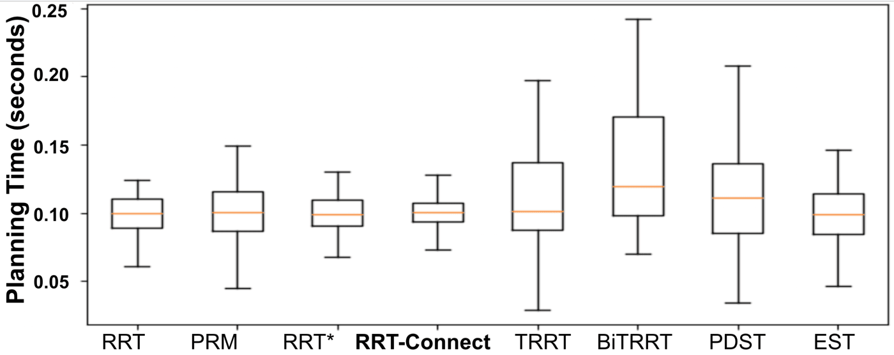
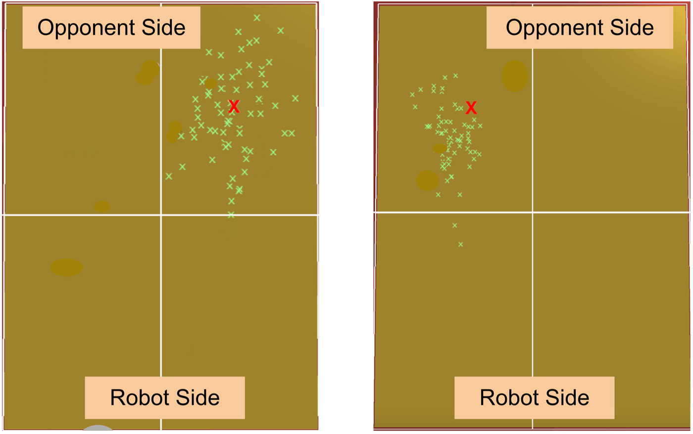
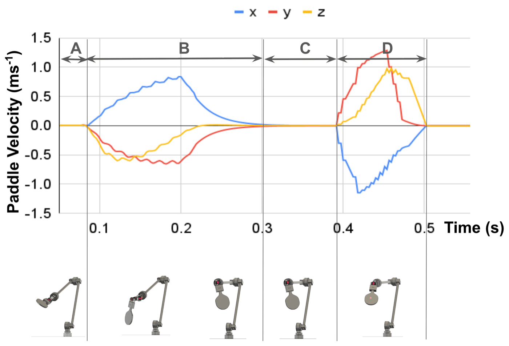
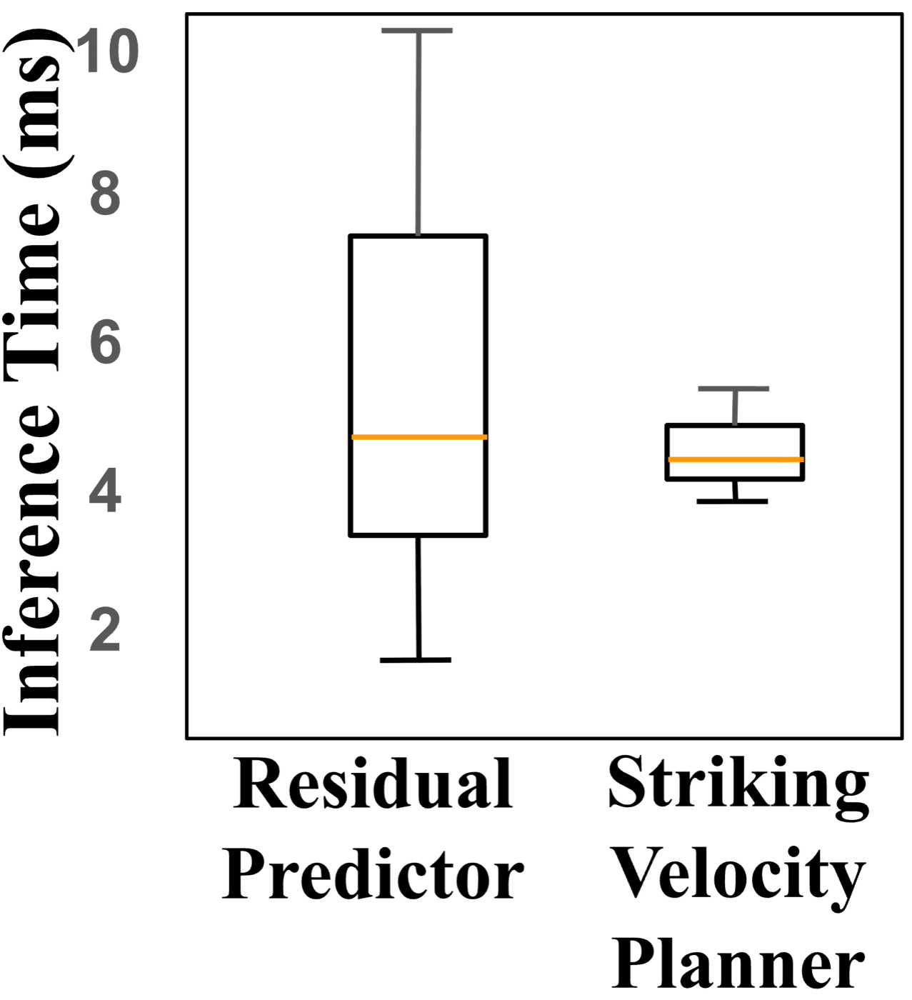

Results
Validated in a PyBullet simulation matching standard table tennis dimensions and ball properties
(20 mm radius, 2.7 g), with a restitution coefficient of 0.75 and modeled table friction and air
resistance.
Residual Predictor
Across 1000 thrown-ball trials, the residual predictor outperforms every baseline regressor tested on MSE,
MAE, and R2 for estimating δ.
| Model | MSE (y) | MAE (y) | R² (y) | MSE (z) | MAE (z) | R² (z) |
|---|
| SVR | 0.0011 | 0.0274 | −4.29 | 0.0069 | 0.0683 | 0.775 |
| Decision Tree | 0.0004 | 0.0074 | −0.94 | 0.0069 | 0.0483 | 0.777 |
| Random Forest (20) | 0.00023 | 0.00688 | −0.05 | 0.00409 | 0.0387 | 0.869 |
| KNN | 0.0002 | 0.0061 | −0.33 | 0.0051 | 0.0475 | 0.835 |
| Ours | 0.0001 | 0.0053 | 0.199 | 0.0041 | 0.0346 | 0.888 |
The Y-axis R2 is comparatively modest, but the residual there is small in absolute terms next to
the Z-axis residual — qualitatively, our model still reliably locates the collision point.
Motion Planning
Among eight classical motion planners benchmarked over 1000 random target points, RRT-Connect had both the
lowest mean planning time and the tightest interquartile range, motivating its use in the contact-ready
module.

Fig. 5 — Planning time comparison across motion planners; RRT-Connect (bold) offers the most consistent, lowest planning time.
Striking Velocity Planner
Repeating the striking-velocity experiment 1000 times with varied throw velocities and target landing
positions, the Random Forest regressor with 160 estimators achieved the best R2 across all three
rotation axes tested.
| Model | Roll | Pitch | Yaw |
|---|
| R² | MAE | MSE | R² | MAE | MSE | R² | MAE | MSE |
| Decision Tree | 0.681 | 2.49 | 20.3 | 0.702 | 4.27 | 38.5 | 0.169 | 2.13 | 8.06 |
| KNN | 0.796 | 2.32 | 13.0 | 0.652 | 4.33 | 45.0 | 0.662 | 1.37 | 3.27 |
| SVR | 0.800 | 2.70 | 12.7 | 0.665 | 4.15 | 43.3 | 0.596 | 1.52 | 3.92 |
| Random Forest (160, ours) | 0.887 | 1.54 | 7.21 | 0.689 | 4.33 | 40.2 | 0.687 | 1.35 | 3.04 |

Fig. 6 — Qualitative accuracy of the striking velocity planner: intended target (red ×) versus actual landing positions (green ×) across repeated trials.
End-to-End Performance
Across 1000 randomly thrown balls, the full system — residual predictor plus learned striking
velocity — successfully intercepted 985, a 98.5% success rate. Without the residual
predictor, relying on the physics-only trajectory alone, the system consistently failed to intercept the
ball, since each bounce alters the trajectory in ways the ideal model cannot capture.

Fig. 7 — Paddle velocity across the four operational stages: (A) estimate the striking point and plan, (B) move to the contact-ready pose, (C) wait for the ball, (D) execute the learned strike.

Fig. 8 — Inference times: the residual predictor (median 4.3 ms) and striking velocity planner (median 4.2 ms) together add well under 16 ms, leaving ample budget for motion planning and control.